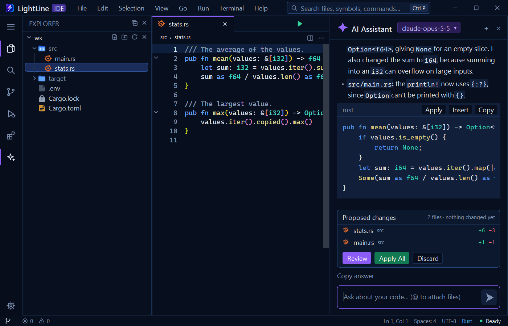

How the AI Assistant panel looks and reads, without changing what it can do. This is based on a live run with Claude Opus 5.5 on 2026-11-24, where search, read, proposed edits, Review and Apply All all worked. The mocks are at logical size: a 420 px panel, LightLine's dark theme and 13.5 px UI text.

| # | Problem | Why it matters |
|---|---|---|
| 1 | Out of order | The model wrote "Let me find mean()." before searching, but all step lines are drawn above all text, because an answer keeps its steps and its text in separate fields (ChatEntry.steps and ChatEntry.text). In a longer answer (text, three reads, more text, an edit), what you see doesn't match what happened. |
| 2 | Two ways to apply one change | The code block has Apply / Insert / Copy and the changes card has Review / Apply All, for the same edit. The block's Apply only knows the selection the question started from, not the file the model meant. |
| 3 | Code is cut off | Long lines run off the right edge with no wrap and no hint that more is there. |
| 4 | Heavy chrome | A ~70 px header with a brand-font title and a pill showing the model's raw id (claude-opus-5-5), repeated over every answer. Every other panel header is 35 px. |
| 5 | Fixed width | About 420 px, and it can't be resized. With the Explorer open, the review diff had about 490 px left, and only one tab fit in the tab strip. |
| 6 | The open file isn't offered | Claude had to search for mean() although stats.rs was the tab you were looking at. |
| 7 | Small things | On the permission card, "Don't Allow" wraps to its own line. Step lines are low-contrast, with no icons and no sign of which step is running. "Copy answer" floats as plain text. Chats are lost when you start a new one. |
An answer becomes a list of parts in the order they arrived: text, a group of steps, the permission card, more text, the changes card. The step currently running is the last line of its group, in italics, with no spinner. The line changes when the result comes in, so waiting on the network costs no frames.
Let me find mean().
Let me find mean().
When the answer is done, its steps fold into one line ("Looked at 3 places"). Click it to see them again. Code blocks wrap long lines, marking each continuation with ↪ and an indent. The block's buttons become small icons: Insert at cursor and Copy. Apply appears on a block only when the answer has no changes card, so there's one way to apply a change. Under the answer are Copy and Retry, plus how long it took.
Let me find mean().
Today it divides by zero: 0 as f64 / 0 as f64 is NaN, so it returns NaN and doesn't panic.
src/stats.rs: mean() now returns Option<f64>, giving None for an empty slice. It sums into an i64 so large inputs can't overflow.src/main.rs: the println! uses {:?}.pub fn mean(values: &[i32]) -> Option<f64> { if values.is_empty() { return None; } let sum: i64 = values.iter().map(|&v| v as i64).sum(); Some(sum as f64 / values.len() as f64) }
The empty panel offers what people do most instead of three promise lines. One line keeps the privacy promise. The clock icon in the header lists earlier chats in this workspace, newest first, kept on this PC only.
Answers come from Claude Opus 5.5 via api.anthropic.com. Your question and the files shown as chips are sent there.
Drag the panel's left edge, like the Explorer's. The width is remembered in session.json, between 300 px and half the window. It's 420 px by default, as today. The edge shows a 2 px accent line while hovered or dragged (the violet line on the mocks' left edge).
| Area | Today | Proposed |
|---|---|---|
| Header | ~70 px, brand title, model pill | 35 px CHAT · chat title, with icons for earlier chats, new chat and close |
| Model | Raw id in the header and over every answer | Friendly name (Claude Opus 5.5) in the composer. A small label over answers, so a mid-chat switch still shows. Unknown models show their id. |
| Order | All steps, then all text | Parts in the order they arrived |
| Steps | Plain lines, no running state | Icons, file links, an italic running line, folded into one line when done |
| Your question | Full-width bordered box | Right-aligned bubble, at most 85% wide, no border |
| Code blocks | Clipped; Apply / Insert / Copy text buttons | Wrapped with ↪; Insert and Copy icons; Apply only when there's no changes card |
| After an answer | "Copy answer" text | Copy · Retry icons, steps and time taken |
| Permission card | Buttons on two rows | One row, shorter labels |
| Composer | One line, send button | Open-file chip, grows to 8 lines, @ and model in a bottom row |
| Empty panel | Intro and three promises | Three actions, one privacy line |
| Earlier chats | Lost on New Chat | Kept per workspace on this PC, listed from the header |
| Width | Fixed ~420 px | Drag to resize, remembered |
session.json.DebugGlyph SVGs in the shared atlas, with no new fonts or HICONs.| Question | Options | Recommendation |
|---|---|---|
| The open file | Offered as a chip, sent unless removed · offered, sent only when clicked · never | Sent unless removed. That's what people expect from Copilot and Cursor, and the chip shows exactly what goes out, so "nothing is sent you can't see" still holds. Capped like @ attachments (400 lines / 24 KB). A setting (aiIncludeOpenFile) turns it off. |
| Earlier chats | Kept, per workspace, on this PC · not kept | Kept: the last 50 per workspace in %APPDATA%\LightLine\chats\, with a setting to turn it off and a "Delete all chats" command. Chats can contain code, so they're never synced or uploaded. |
| Where the model is picked | Composer's bottom row · header (today) | Composer. It's where you look when you ask, and it frees the header. |
| Steps after an answer | Folded into one line · always shown | Folded. The answer matters more than its trail; one click shows it. |
| Long code lines | Wrap · scroll sideways | Wrap. Sideways scrolling inside a scrolling panel is awkward with a wheel and costs a second hit-test layer. |
| How it ships | Three PRs · one PR | Three PRs. (1) Order fix, header, steps, code blocks, answer footer, permission card. (2) Composer, open-file chip, model picker, empty panel, resizing. (3) Earlier chats. The order fix ships first because it's a real bug. |
ai_chat.rs: an answer's content becomes a list of parts (text, steps, card, changes), appended as stream events arrive. The history sent to the model is unchanged.render/ai_assistant.rs: the 35 px header, part-by-part layout, folded steps, code wrapping with a per-block cache, icon toolbars, the footer.ai.rs (portable, unit-tested).session.json, and the aiIncludeOpenFile setting (five places in settings.rs).chat_store.rs in the library (save, list and load chats; atomic writes; 50 per workspace), the history list, the aiKeepChats setting, and AI: Delete All Chats.USER_GUIDE.md (AI Assistant and settings), README, privacy section (where chats are kept), CHANGELOG.md.